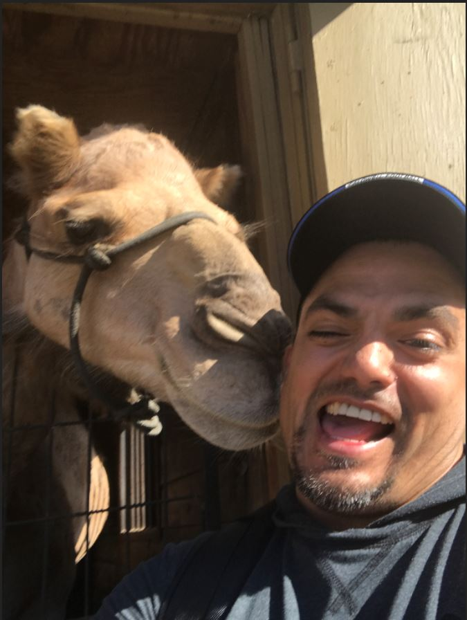

About Me
I grew up in Chicago's suburbs until the six grade. If you have seen any of the following 80's movies Goonies, Ferries Bueller's Day Off, or maybe ET then you can imagine my upbringing, kids on bikes in packs getting into things.
I went to high school in San Antonio Texas.After graduation I moved around, Chicago, Milwaukee, Detroit, Denver, Los Angeles, Zurich and Jersey City. I reside today in Caldwell, NJ where I spend most of my days
playing in the street with the neighborhood kids. I am all time QB to even out the teams and kick with my left foot for kickball. I have a 10 year old son, Diego and a 3 year old daughter Dahlia.
For money I work at Kuehne + Nagel, Inc, a freight forwarding company where I manage a team of 25 located throughout the US. They work in KN's "Customer Solutions" team, though many might argue otherwise.
I have been at the same company for 22 years.